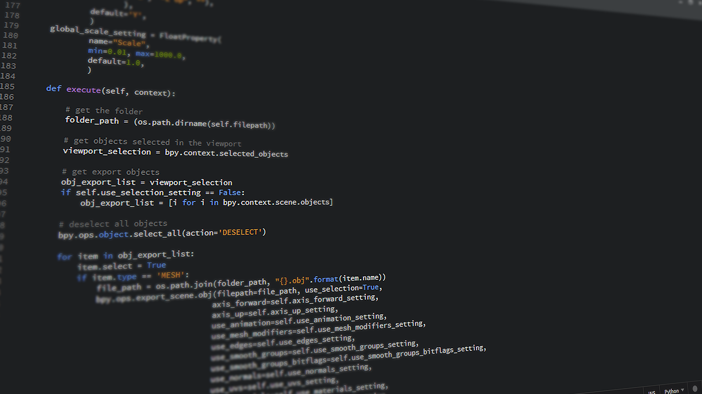

A downtime dashboard that visualizes daily downtime by customer, department, reason, and section was created. This dashboard helps to identify trends and patterns in downtime, which can be used to improve efficiency and productivity.

A kaizen count dashboard was created to visualize the kaizen count of the department and track each and every person's kaizen count. This dashboard helps to identify trends and patterns in kaizen count, which can be used to improve continuous improvement efforts.

A plan changes dashboard was created to visualize plan changes of the department and provide details about SAH loss, SAH gain, customer wise plan changes and many other details. This dashboard helps to identify trends and patterns in plan changes, which can be used to improve planning and forecasting efforts.

A dashboard was created to visualize average price change of bedroom, revenue for year, and price change according to region using Airbnb dataset. This dashboard helps to identify trends and patterns in Airbnb data, which can be used to improve pricing strategies and decision making.
A COVID-19 data exploration project was conducted using SQL to identify trends and patterns in COVID-19 data. This project helped to better understand the spread of COVID-19 and inform public health decisions.

A NashvilleHousing data cleaning project was conducted using SQL to identify and correct errors in the data. This project helped to ensure that the data was accurate and reliable for further analysis.

A Web Scraping project was conducted using Python to extract data from www.wikipedia.com. This project helped to demonstrate the ability to use Python for web scraping and data extraction.

An Automatic File Sorter was created using Python to automatically sort files based on their extension. This project helped to demonstrate the ability to use Python for automation and file manipulation.